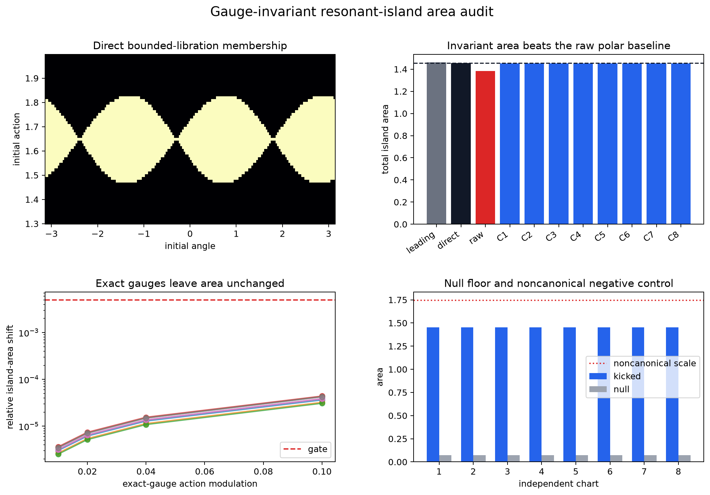

resolved_supported (gauge_invariant_island_area). On this frozen synthetic reference profile, the coordinate-dependent resonant coefficient failed its exact-gauge test, while bounded-libration area survived it.

A structured physical initial-condition mesh was advanced by the exact
return map. A probe cell counts as resonantly trapped when the unwrapped
m·angle remains within one full turn. Cell areas come from the
physical or learned canonical mesh, not from a fitted coefficient.
| measurement | area | error vs direct |
|---|---|---|
| leading pendulum total | 1.460593 | 0.387% |
| direct physical/oracle mesh | 1.454970 | — |
| raw observed polar angle | 1.382882 | 4.955% |
| learned-chart consensus | 1.453772 | 0.082% vs direct mesh |
| direct physical/oracle refined mesh | 1.460938 | 0.024% vs leading |
| chart | area | error | membership Jaccard | null fraction |
|---|---|---|---|---|
| seed-7-h24-s6 | 1.453770 | 0.082% | 0.99917 | 4.959% |
| seed-17-h24-s6 | 1.453770 | 0.082% | 0.99917 | 4.959% |
| seed-29-h24-s6 | 1.453772 | 0.082% | 0.99917 | 4.959% |
| seed-41-h24-s6 | 1.453769 | 0.082% | 0.99917 | 4.959% |
| seed-7-h40-s8 | 1.453773 | 0.082% | 0.99917 | 4.959% |
| seed-17-h40-s8 | 1.453773 | 0.082% | 0.99917 | 4.959% |
| seed-29-h40-s8 | 1.453772 | 0.082% | 0.99917 | 4.959% |
| seed-41-h40-s8 | 1.453773 | 0.082% | 0.99917 | 4.959% |
Maximum exact-gauge area shift: 0.0044%. Exact-canonical area invariance is structural; the empirical content is that the learned winding membership and numerical quadrature also survive. The deliberately noncanonical 1.2× area-scaling plumbing check moved the answer by 20.00%, as it must by construction.
| gate | value | threshold | verdict |
|---|---|---|---|
| direct_map_matches_leading_area | 0.003850437023236711 | <= 0.03 | pass |
| learned_consensus_matches_direct_area | 0.000823385144769914 | <= 0.02 | pass |
| every_chart_matches_direct_area | 0.0008248895111526758 | <= 0.03 | pass |
| membership_matches_direct_topology | 0.9991742361684558 | >= 0.98 | pass |
| exact_gauges_preserve_area | 4.398410916543219e-05 | <= 0.005 | pass |
| null_area_stays_within_resolution_fraction_ceiling | 0.04958669479000232 | <= 0.1 | pass |
| noncanonical_area_scaling_plumbing | 0.20000000000000184 | >= 0.15 | pass |
| learned_charts_preserve_domain_area | 1.1968927316222883e-06 | <= 0.001 | pass |
| probe_mesh_within_model_support | True | all charts true | pass |
| learned_chart_beats_raw_polar_baseline | 0.0011980003246316873 | < 0.07208758736680676 | pass |
On one noiseless synthetic kicked twist map and one fixed dense physical initial-condition mesh, bounded-libration area recovered from independently trained exact-symplectic charts agreed with direct physical/oracle area and survived the frozen exact-gauge ladder. The dense probe states were not used for chart training, but the protocol was developed on this fixture. Exact-gauge area preservation is structural; the empirical content is same-mesh winding membership and quadrature agreement. This supports an invariant quotient on this retrospective fixture only; it does not establish absolute continuum accuracy, prospective transfer, measured-system robustness, general transport recovery, calibrated uncertainty, or a theorem.
The probe states were not used for chart training, but this was the method-development fixture. The frozen protocol still needs prospective confirmation on a second system.
This is an empirical synthetic support result, not a theorem, a calibrated uncertainty interval, a measured-rig validation, or evidence that learned charts beat classical methods generally.